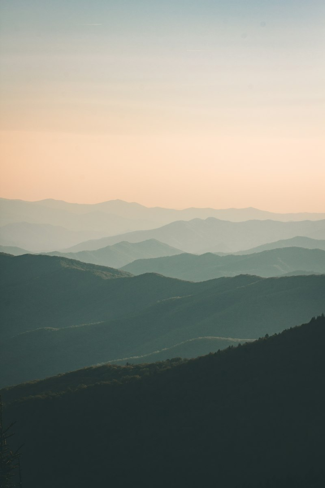

For tens of thousands of years, the American bison (buffalo) served as the spiritual, cultural, and physical center of life for Indigenous peoples across the continent. Today, an inspiring collaborative movement is restoring wild Yellowstone bison to sovereign tribal nations, achieving profound ecological restoration and cultural revitalization, fulfilling our commitment to Indigenous tribal conservation partnerships.

The Genetic Lineage of Yellowstone's Wild Herds
Unlike commercial livestock herds that frequently carry domestic cattle genes, Yellowstone National Park is home to the only continuously wild, free-ranging bison population in North America since prehistoric eras.
For decades, state-mandated livestock border policies subjected these majestic animals to capture and slaughter whenever they crossed park boundaries into Montana during winter migrations—routes that frequently bisect dangerous high-speed highways requiring dedicated wildlife crossing structures and safe migration corridors. Our coalition fought alongside sovereign tribal governments to replace slaughter with life: establishing a rigorous quarantine and transfer program.
The Quarantine and Transfer Protocol: Saving Lives
In collaboration with the Fort Peck Assiniboine and Sioux Tribes, the InterTribal Buffalo Council (ITBC), and federal biologists, we helped construct and expand certified quarantine facilities.
- Brucellosis Screening: Healthy bison undergo thorough multi-year testing to confirm they are completely disease-free.
- Repatriation Across Sovereign Nations: Certified buffalo are transferred directly to tribal reservations across Montana, the Dakotas, Wyoming, Washington, and beyond, protecting unfragmented grasslands adjacent to roadless national forest wilderness boundaries.
- Over 1,000 Wild Bison Saved: Rather than facing slaughter, hundreds of genetically pure animals are establishing foundational herds on sovereign native prairie.

Keystone Herbivores and Grassland Ecology
Bison are ecological architects of the prairie. Their wallowing behavior creates seasonal rain pools that nurture amphibians and rare wildflowers. Their rotational grazing patterns foster diverse native grasses and provide vital nesting cover for imperiled grassland birds.
By returning buffalo to ancestral tribal territories, Indigenous land stewards are healing soil biology, recharging underground aquifers, and maintaining water quality that sustains native cutthroat trout across regional watersheds.
Cultural Reconnection for Future Generations
"When the buffalo return, the people heal," explains a tribal elder and wildlife manager. "Having these animals back on our lands teaches our youth traditional language, spiritual reverence, food sovereignty, and ecological pride."
Support Tribal Bison Repatriation
Your donation funds the testing, transfer trailers, and tribal pasture fencing needed to bring wild bison home.
Contribute to the Bison Fund